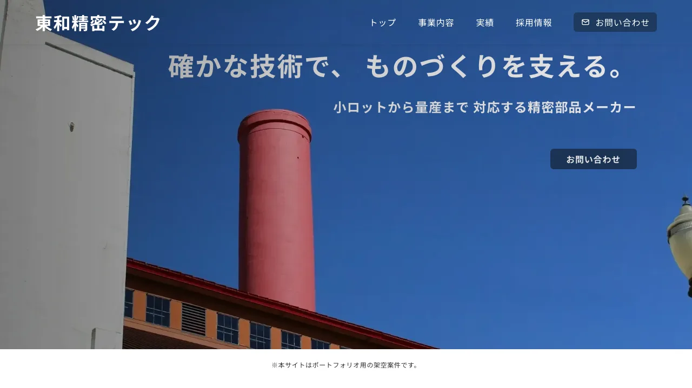
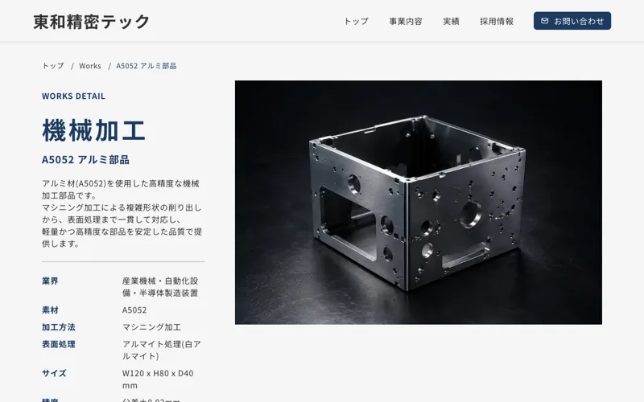

Case Study — WordPress
東和精密テックWordPress化
自分で制作した静的サイト（東和精密テック）を、WordPress のオリジナルテーマに作り替えました。見た目はそのままに、お知らせと実績を管理画面から追加・更新できる形にしています。ポートフォリオ用の架空案件です。
デモサイトを見る
Problem
課題
静的サイトのままでは、更新のたびに HTML を直接書き換える必要がありました。実際に数えると、次の4つの問題がありました。
- お知らせの一覧から、存在しない詳細ページへのリンクが7か所ある
- 実績を1件追加するたびに、261行の HTML を複製している
- 実績一覧のカテゴリー絞り込みが、リンク先の無いボタンで動かない
- トップと一覧の両方にお知らせ・実績を直書きしていて、追加のたびに2つのファイルを直す
Approach
アプローチ
お知らせは WordPress の投稿に、実績はカスタム投稿タイプとカテゴリー（タクソノミー）にしました。業界・素材・加工方法などのスペックは ACF で入力欄にし、電話番号のような共通情報も1か所で管理しています。「納品後1年で変わるか」を基準に編集できる範囲を決め、本文の自由入力はあえて開放していません。デザインが崩れる方向に扉を開けないためです。
実績一覧には、カテゴリーと素材で絞り込める検索（Ajax、URL の共有と「戻る」に対応）を、お問い合わせには SMTP で送るメールフォームを付けています。

Result
成果
4つの問題は、すべて仕組みの側で解消しました。お知らせは投稿ごとに詳細ページが生成され、実績は管理画面で1件追加すれば、一覧・トップ・カテゴリー別のページに同時に反映されます。絞り込みも実際に動きます。見た目は静的サイトと同じまま、HTML を触らずに更新できるサイトになりました。